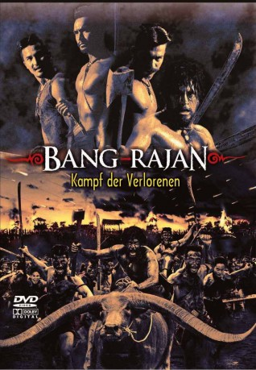

#1547 Bang Rajan - Kampf der Verlorenen
Alternativ: Bang Rajan (Englischer Titel)
 
 IMDB-Wertung: 6.7 / 10
IMDB-Wertung: 6.7 / 10  Metascore: 59
Metascore: 59 
Siam im Jahr 1763: Der neue burmesische Herrscher versucht alle Staaten seines Reiches zu unterjochen und sendet seine gewaltigen Heerscharen in das wehrlose Land. Plündernd und mordend ziehen die Truppen durch Städte und Dörfer. Sie hinterlassen eine Spur der Verwüstung, des Leids und des Elends. Doch sie werden aufgehalten von Bang Rajan, einem kleinen Dorf, dessen mutige Einwohner sich verzweifelt den gnadenlosen Horden entgegenwerfen. Todesmutig sind sie bereit, ihre Freiheit mit dem Leben zu verteidigen und leisten monatelang Widerstand bis zum blutigen Ende.
Jahr: 2000
Dauer: 71 Minuten
FSK: 18
Land: Thailand Studio: Cine proTonspuren:
Untertitel:
Auflösung: 1080p (1920x1080) Größe: 8140 MB
Genre: Action, Drama, Krieg, Geschichte
Regisseur: Tanit Jitnukul
Drehbuch: Tanit Jitnukul, Kongkiat Khomsiri, Patikarn Phejmunee, Bunthin Thuaykaew
Soundtrack: Chatchai Pongprapaphan
Darsteller:
- Bin Bunluerit als Nai Thongmen
- Jaran Ngamdee als Nai Jan
- Winai Kraibutr als Nai In
- Theerayut Pratyabamrung als Luang Phor Thammachote
- Bongkoj Khongmalai als E Sa
- Chumphorn Thepphithak als Nai Than
- Suntharee Maila-or als Taeng-Onn
- Phisate Sangsuwan als Nemeao Seehabodee
- Theeranit Damrongwinijchai als Mangcha-ngai
- Surachet Lorsungnem als Khun San
- Jarin Phomrangsai als Commander Arka-Punkayee
- Phutharit Prombandal als Phan Ruang
- Nirut Saosudchart als Nai Dok
- Voraphark Sarobon als Commander Surin-Jaw-Khong
- Krit Suwannapaph als Commander Suki
- Atthakorn Suwannaraj als Nai Muang
- Somchat Ubon als Muen Khun
Datei: X:\FSK18-Eastern-Collections\Bang Rajan\Bang Rajan - Kampf der Verlorenen (2000, FSK18, 1920x1080).mkv seit 15.07.2015
Festplatte: FSK18
 Alle Filme aus Gruppe 'FSK18-Eastern-Collections\Bang Rajan'
Alle Filme aus Gruppe 'FSK18-Eastern-Collections\Bang Rajan'